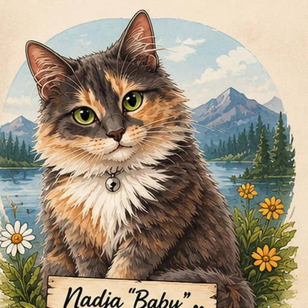
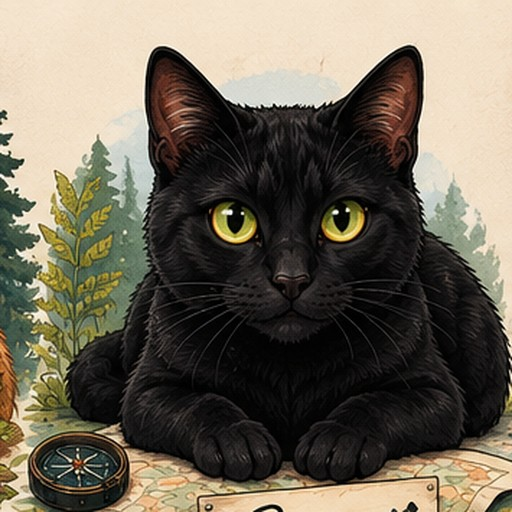
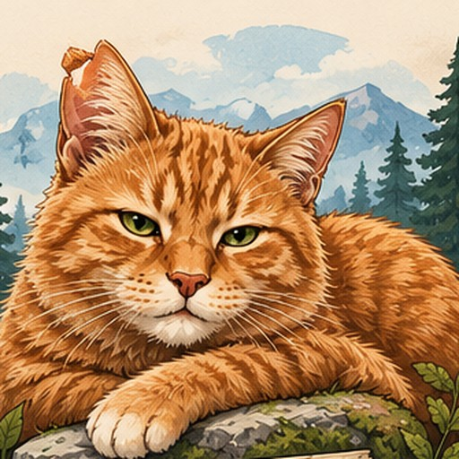

Recently saved
We get to choose.
We don't need to know where we're going. We can look around, follow what interests us, and see what starts to feel like ours.

Possibility
What sounds interesting today?
Pick a door. No commitment required.
Signals
What's starting to gather?
Shared notebook
What we're learning

Search studioExplore without rebuilding the search every time.
Choose whose thread we're following, what kind of possibility, and where. Elsewhere builds several useful searches from the combination.
Lenses
Brad's paths
Saved possibilities
Keep the things that make either of you look twice.
Jobs, employers, places, properties, organizations, articles, courses, scouting ideas—anything can become evidence later.

Place threadsWhere are the signals starting to overlap?
No composite score. Just visible evidence: Brad possibilities, Sam possibilities, life possibilities, reactions, and what keeps resurfacing.
SupaMap · shared pinboard
Put a pin in it.
Click anywhere that catches your attention. The pin stays here for both of us, even if all we know right now is “huh… maybe.”
Our Elsewhere map
Search for somewhere, or click the map to drop a pin. Drag and zoom as much as you want.
0 pins
Shared field notes
What are we learning?
Capture patterns, surprises, questions, recurring vocabulary, or the simple thought that a place is starting to feel interesting.
Portability
Elsewhere should never own the research.
Export the workspace whenever you want. JSON preserves the full structure; CSV is convenient for inspection and analysis.
Export workspace
Download possibilities, reactions, observations, map pins, map links, place keys, and workspace metadata.
Brad + Sam
Reset local data
This appears only in local demo mode. It clears this browser's Elsewhere preview data.